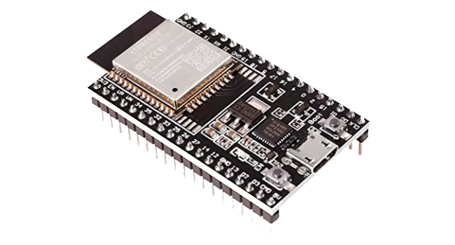

<div>
  <nav class="bg-gray-800">
    <div class="mx-auto max-w-7xl px-4 sm:px-6 lg:px-8">
      <div class="flex h-16 items-center justify-between">
        <div class="flex items-center">
          <div class="flex-shrink-0">
            
            
          </div>
          <div class="hidden md:block">
            <div class="ml-10 flex items-baseline space-x-4">
              <a href="#" class="bg-gray-900 text-white rounded-md px-3 py-2 text-sm font-medium" aria-current="page">Dashboard</a>
            </div>
          </div>
        </div>

        <div class="-mr-2 flex md:hidden">
          <!-- Mobile menu button -->
          <button type="button" class="inline-flex items-center justify-center rounded-md bg-gray-800 p-2 text-gray-400 hover:bg-gray-700 hover:text-white focus:outline-none focus:ring-2 focus:ring-white focus:ring-offset-2 focus:ring-offset-gray-800" aria-controls="mobile-menu" aria-expanded="false">
            <span class="sr-only">Open main menu</span>
            <!-- Menu open: "hidden", Menu closed: "block" -->
            <svg class="block h-6 w-6" fill="none" viewBox="0 0 24 24" stroke-width="1.5" stroke="currentColor" aria-hidden="true">
              <path stroke-linecap="round" stroke-linejoin="round" d="M3.75 6.75h16.5M3.75 12h16.5m-16.5 5.25h16.5" />
            </svg>
            <!-- Menu open: "block", Menu closed: "hidden" -->
            <svg class="hidden h-6 w-6" fill="none" viewBox="0 0 24 24" stroke-width="1.5" stroke="currentColor" aria-hidden="true">
              <path stroke-linecap="round" stroke-linejoin="round" d="M6 18L18 6M6 6l12 12" />
            </svg>
          </button>
        </div>
      </div>
    </div>

    <!-- Mobile menu, show/hide based on menu state. -->
    <div class="md:hidden" id="mobile-menu">
      <div class="space-y-1 px-2 pt-2 pb-3 sm:px-3">
        <!-- Current: "bg-gray-900 text-white", Default: "text-gray-300 hover:bg-gray-700 hover:text-white" -->
        <a href="#" class="bg-gray-900 text-white block rounded-md px-3 py-2 text-base font-medium" aria-current="page">Dashboard</a>
      </div>
    </div>
  </nav>

  <div class="flex flex-col flex-auto min-w-0">
    <div class="flex-auto border-t -mt-px pt-4 sm:pt-6">
        <div class="w-full max-w-screen-xl mx-auto">
          <div class="grid grid-cols-1 sm:grid-cols-2 md:grid-cols-3 gap-6 w-full min-w-0">
            <div class="flex flex-col flex-auto p-6 rounded-2xl overflow-hidden"></div>
            <div class="flex flex-col flex-auto p-6 bg-gray-500 shadow rounded-2xl overflow-hidden">
              <div class="flex items-start justify-between">
                <div class="text-lg font-medium tracking-tight leading-6 truncate">Modulo ESP-32</div>
              </div>
              <div class="flex flex-col items-center mt-2">
                <div></div>
                <div class="text-xl font-bold text-blue-50">
                  <ng-container *ngIf="sensor.status === 'SENSOR_ON'">ENCENDIDO</ng-container>
                  <ng-container *ngIf="sensor.status === 'SENSOR_OFF'">APAGADO</ng-container>
                </div>
                <div class="align-middle">
                  <section class="example-section">
                    <ng-container *ngIf="sensor.status === 'SENSOR_ON'">
                      
                    </ng-container>
                    <ng-container *ngIf="sensor.status === 'SENSOR_OFF'">
                      
                    </ng-container>
                  </section>
                </div>
                <div>
                  <mat-radio-group aria-label="Select an option">
                    <mat-radio-button value="off" (change)="changeStatus('SENSOR_OFF')" [checked]="sensor.status === 'SENSOR_OFF'" color="warn">APAGAR</mat-radio-button>
                    <mat-radio-button value="on" (change)="changeStatus('SENSOR_ON')" [checked]="sensor.status === 'SENSOR_ON'">ENCEDER</mat-radio-button>
                  </mat-radio-group>
                </div>
              </div>
            </div>
            <div class="flex flex-col flex-auto p-6 rounded-2xl overflow-hidden"></div>
          </div>
        </div>
    </div>
  </div>
</div>
